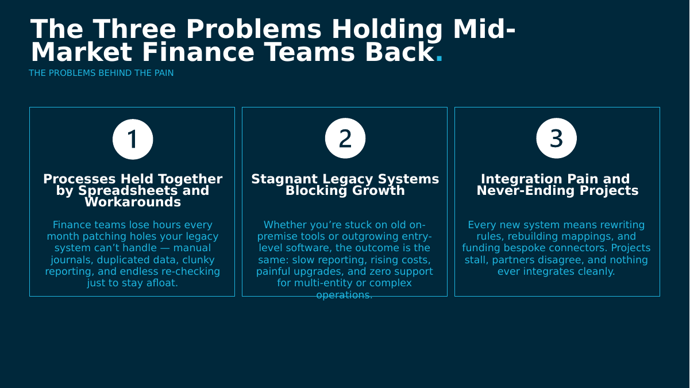
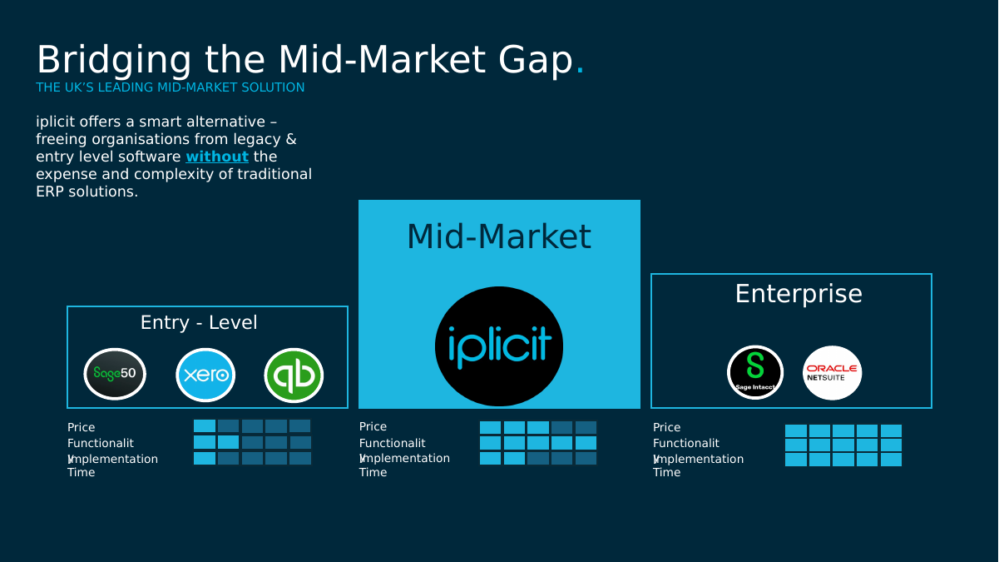
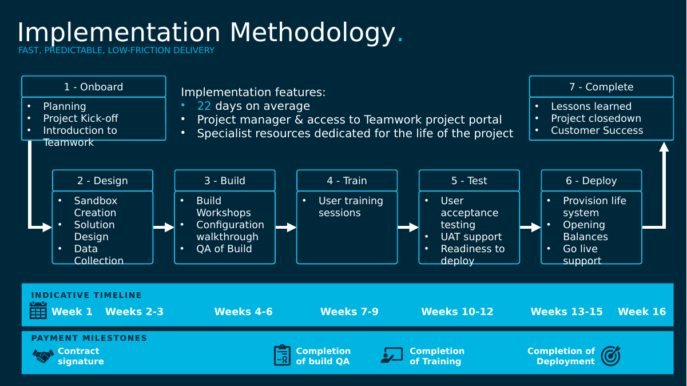
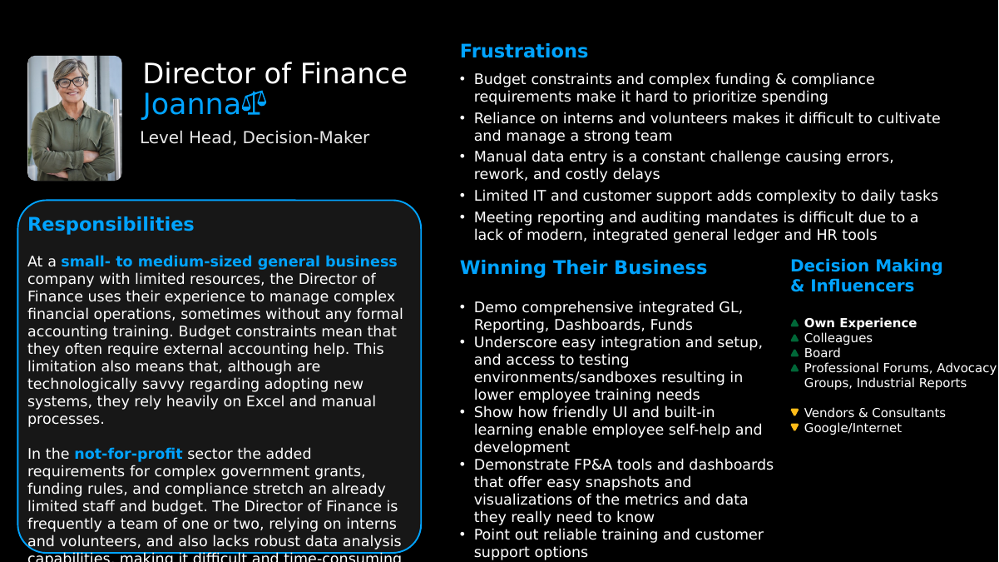
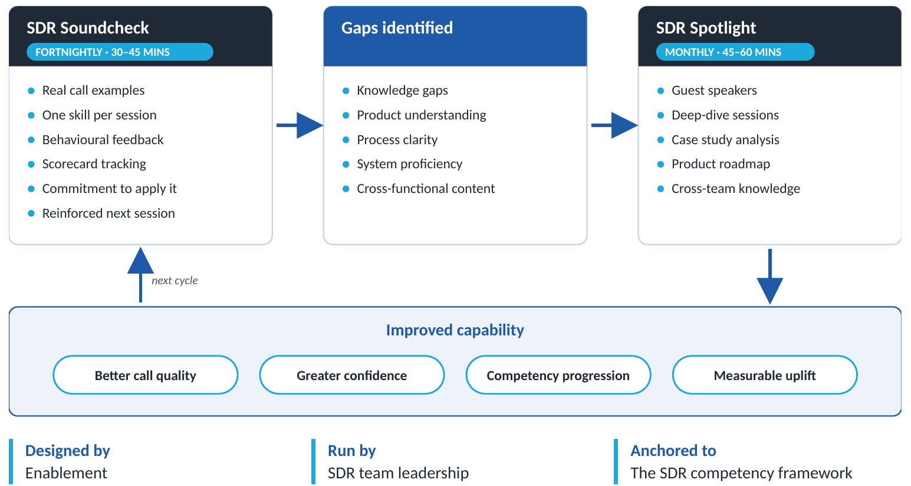
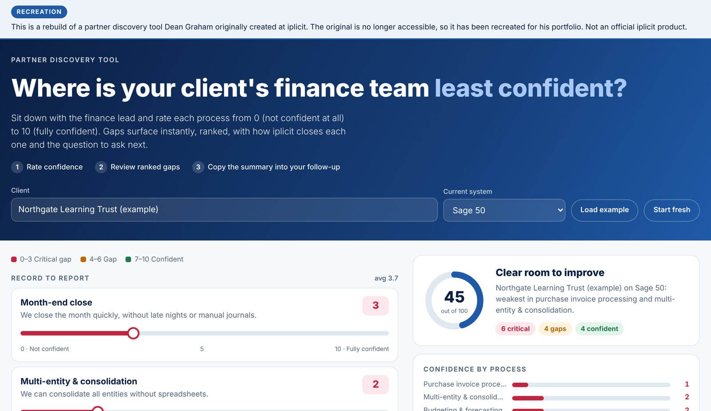
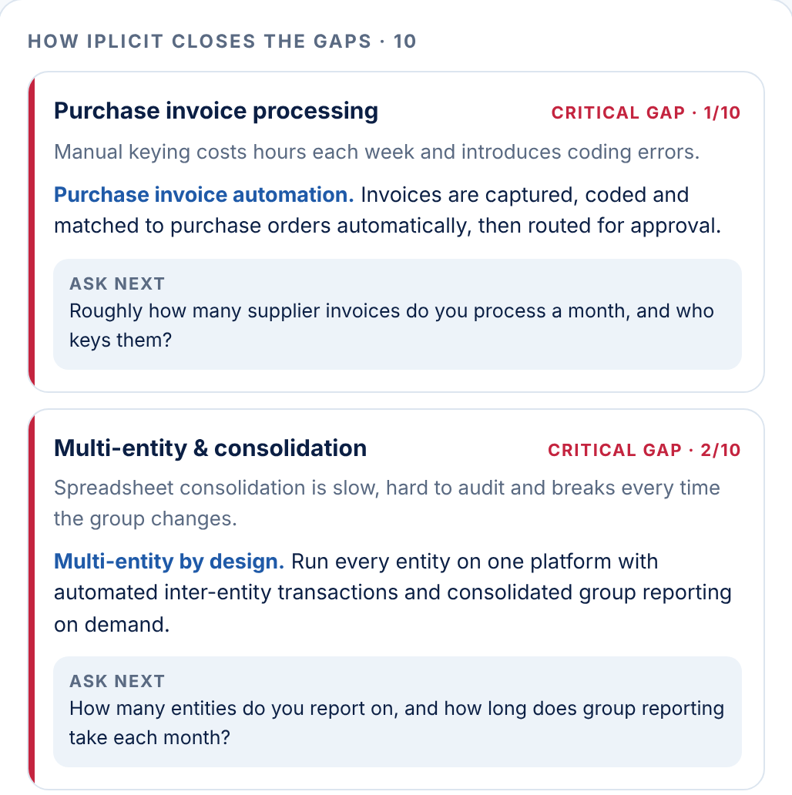

01 · Onboarding
SDR onboarding programme
The iplicit SDR Onboarding Handbook, November 2025
Situation
New SDRs were taking around four weeks to book their first meeting. With the team growing quickly, every new starter needed the same clear route to being fully ramped.
What I built
A twelve-week programme in three phases: Learn, Prove and Produce. Each month sets out what the new starter will master, what they will do and what “good” looks like by the end of it. Outbound calling starts in week two rather than after training finishes.
What changed
Time to first meeting fell from four weeks to two, then to four days over about ten more starters. After each one I asked the new hire and their manager what had helped and changed the pacing. Meetings per SDR rose from 6 to 8 a month while the team more than doubled.
This month is about building your foundations and getting comfortable operating in a real sales environment. You’ll learn iplicit’s story, product fundamentals, our ICPs, and the problems our prospects face. You’ll start outbound early, practice call frameworks, and begin speaking to real prospects. By the end of Month 1, you should be able to confidently explain why organisations choose iplicit, run basic outbound activity without hesitation, and book your first meeting through consistent, well-researched outreach.
What you’ll master
- iplicit story and product fundamentals
- ICPs and personas
- Value proposition: why prospects choose iplicit
- Research fundamentals and call/email basics
- Intro to tools: HubSpot, Apollo, Attention.io
What you’ll do
- Shadow SDRs, AEs, and real customer calls
- Learn calling frameworks
- Start early outbound (week 2 onwards)
- Practice objection handling and call structure
- Build your first personal prospect list
End-of-month outcomes
- Can explain iplicit clearly and confidently
- Sends well-researched, relevant outreach
- Handles basic objections with composure
- Books your first meeting
- Demonstrates ownership, resilience, and pace
Now you turn knowledge into results. This month is about improving call quality, sharpening your messaging, and demonstrating that you can generate pipeline consistently. You’ll deliver cleaner handoffs, work closely with AEs, and use tools like Attention.io to improve your conversations. You’re expected to show discipline in your daily routines, understand vertical-specific pain points, and hit a steady meeting target. By the end of Month 2, you should be operating with confidence, accuracy, and visible momentum.
What you’ll master
- Advanced outbound execution
- Persona-specific messaging (CFO, FD, Head of Finance)
- iplicit’s competitive positioning (Sage50/200, Intacct, Xero, Exchequer)
- Vertical relevance
- Strong objection handling and call control
What you’ll do
- Run structured daily prospecting blocks
- Keep HubSpot pipeline clean and accurate
- Collaborate with AEs for strong handoffs
- Review and improve calls using Attention.io
End-of-month outcomes
- Books consistent meetings (4+ for the month)
- Demonstrates steady call quality and talk track control
- Produces clean, high-quality handoffs
- Applies vertical insights in messaging
Extract reformatted for this portfolio. Wording is unchanged from the original handbook.
02 · Product knowledge and messaging
Qualification question bank
SDR Technical Qualification Questions and Explanations
Situation
SDRs were expected to qualify a prospect’s technical fit as well as budget, authority, need and timing before passing a meeting to an AE.
What I built
Twenty-four questions grouped by company structure, current system, stock, functional needs and buying process. Every question comes with a short explanation of why it’s worth asking and what the answer tells you. For example, the number of legal entities points straight to consolidation pain.
Why it matters
It turns product strengths into questions a prospect can answer in their own words. SDRs could hold a credible conversation with a finance director without deep product knowledge, and the AE they were paired with started from a clearer picture of the prospect’s pain.
Company structure & size
These questions help gauge the complexity of the business and whether iplicit is a good fit.
Decision-making & buying process
These questions help assess the prospect’s authority, timeline, and budget.
Questions 7–17 cover current system, stock and functional needs.
Extract reformatted for this portfolio. Wording is unchanged from the original document.
03 · Battlecards and positioning
Partner cheat sheet and confidence kit
Partner-facing enablement, December 2025
Situation
Accountancy and reseller partners are often the first to notice when a client has outgrown their finance system. They aren’t product experts, though, and won’t read long material before a client conversation.
What I built
Two levels of the same message. A short cheat sheet covering who the product is for, the triggers to listen for, the one-liner, and what to say when asked about price, integration or implementation. A fuller confidence kit with proof points, referral wording and answers to common client worries.
How it was used
It was built so that every partner tells the same story, whatever their sector or experience. I also used the kit as the basis for a practical hiring exercise, asking learning-content candidates how they would turn it into training partners would use mid-conversation.
“iplicit gives you enterprise-grade capability without enterprise-grade cost, complexity, or timelines.”
Signs a client is a strong fit
Partners should immediately lean in when clients mention:
If the client asks about integration
“iplicit is API-first and integrates with the systems you rely on — CRM, EPOS, payroll, TMS, ticketing, stock, expense tools, banking and more. You keep what works; iplicit becomes the finance hub.”
If the client asks about implementation
“With one of the fastest implementation times in the market, most customers go live in weeks, not years. UK-based delivery, clear timelines, no ERP-style disruption.”
Key triggers that say “This client is ready for iplicit”
This section helps you quickly recognise when a client is likely to benefit from iplicit, without needing deep technical knowledge or a detailed discovery process. The triggers highlight the practical signs that an organisation has outgrown its current finance system — whether that’s operational strain, manual work, growth pressures, or reporting limitations. Use this list as a simple checklist during your conversations or reviews. If a client shows several of these indicators, it’s a strong signal that introducing iplicit will add genuine value to them and strengthen your advisory relationship.
Operational triggers 8
- Multi-entity growth or new subsidiaries
- Heavy Excel use for reporting or consolidation
- Too much manual month-end work
- Restricted/unrestricted funds complexity
- Inventory or project tracking limitations
- Approval processes happening via email/Teams
- Bank rec or AP choking the finance team
- High dependency on “that one person who knows the system”
Technology triggers 3
- They run Xero, Sage 50, QuickBooks, or an ageing on-prem system
- Need for deeper integrations with CRM, stock, HR, billing
- Making decisions off delayed / inconsistent data
Behavioural triggers 3
- CFO/FD showing frustration with inefficiency
- Leadership pushing for scalability
- Team drowning in admin
Extracts reformatted for this portfolio. Wording is unchanged from the original documents.
04 · Pitch decks and personas
Pitch deck, buyer personas and AI deck builder
Partner sales deck (20 slides) and buyer persona set
Situation
Our team and partners were pitching to finance leaders across very different sectors, from financial services to theatres and hire companies. Each conversation needed the message tailored to that buyer.
What I built
A deck that starts with the buyer’s problem before it gets to the product, with sector pages and sections on implementation, support and security. Behind it sits a set of buyer personas, from CFO to IT director, setting out each one’s goals, frustrations and who influences them.
What changed
I coached reps on running the deck, then built an AI deck builder that produces a pre-approved deck in moments, tailored to the prospect’s sales stage, industry and persona. All eight AEs and our three partner account managers used it.




05 · Coaching and measurement
SDR Soundcheck & Spotlight
A coaching model and measurement framework for the SDR team
Situation
Call listening and team sessions had happened, but not consistently, and they were hard to link to any particular skill gap.
What I built
A fortnightly Soundcheck: thirty to forty-five minutes on one skill, using real calls, with each SDR committing to try it before the next session. The gaps it surfaced shaped a monthly Spotlight session with guest speakers and deeper dives. Enablement designed the system and SDR leadership ran it.
What changed
Average call scores across the team rose from 3.2 to 3.8. It was measured with data the team already had in Attention.io and HubSpot, so it added very little admin.

| Measurement layer | The question it answers | Examples of what we tracked |
|---|---|---|
| 1. Programme health | Are sessions happening, and are people turning up? | Sessions delivered against plan, attendance, topics covered |
| 2. Behavioural adoption | Are SDRs trying what they learned on real calls? | Commitments completed, examples shared at the next session, scorecard trends by skill |
| 3. Competency movement | Are SDRs actually getting better? | Call scores by competency before and after eight weeks, using the same method both times |
06 · Needs analysis
Diagnosing an SDR performance gap
Case study, 2026
The brief
The SDR team was falling short of its target of 12 meetings per rep per month. I was asked by the leadership team to find out why and design an enablement programme to close the gap.
What I did
I combined CRM meeting data, 90 days of call-recording and coaching data, and nine structured interviews with SDRs, team leads, AEs and senior leaders. Every interview followed the same question set, so the answers could be compared.
What I proposed
Five enablement tracks, each with an owner and a measure, starting with quick wins in week one alongside a 90-day build. I also set out clear requests for the issues that sat with other teams.
Learning from the top performer
One SDR was consistently booking more meetings than anyone else. Rather than put it down to territory or luck, I compared more than 160 of their calls with nearly 500 calls from the rest of the team. The difference came down to a handful of habits that could be taught, such as opening with a clear reason to talk, layered discovery instead of a script, reframing objections rather than backing down, and owning the next step instead of offering to send an email. I wrote these up as coaching material for the rest of the team.
Within enablement’s control
- A regular coaching rhythm
- Top-performer habits written down and taught
- A redesigned ramp for new starters
- Foundational call skills
Needing other teams
- Team lead roles and accountability
- How inbound leads were shared out
- The profile used for hiring
- Brand awareness in some sectors
07 · Partner discovery
Finance Gap Finder
Interactive partner tool, rebuilt for this portfolio
Situation
Partners could spot a client who had outgrown their finance system, but turning that into a structured conversation about what to fix depended on product knowledge most of them didn’t have.
What I built
An interactive discovery tool. The partner and the client’s finance lead rate their confidence in key finance processes from 0 to 10. Anything scored 6 or below becomes a ranked gap, showing what it costs the client and how iplicit closes it.
What changed
More than 20 referral, reseller and ISV partners used it with their clients in its first quarter, and it was directly attributed to 8 referrals in that time. Partners had a structured way into discovery without needing to be product experts.


Try it
The original tool is no longer accessible, so I rebuilt it to show how it worked. The rebuild runs in any browser.
Open the Gap Finder- 1Rate each finance process from 0 (not confident) to 10 (fully confident)
- 2Review the gaps, ranked from weakest to strongest
- 3Copy the summary into a follow-up email to the client
08 · Deal coaching
Deal coaching toolkit
The W and the M, mutual action plans and the value map: a package for AEs and SCs, rebuilt for this portfolio
Situation
Deals were stalling in ways coaching could fix. 40% of Closed Lost was put down to prospects going quiet, prospects sat through just over three demos each, and too many deals rested on one friendly contact.
What I built
A coaching package with three tools. The W and the M make multi-threading a shape a rep can draw in a deal review. Mutual action plans turn the end of each call into a dated commitment. The value map keeps demos on the buyer’s top problems.
What changed
In a pilot with two AEs, deals lost because the prospect went quiet fell from 40% to 32% of Closed Lost. With the SC team, demos per prospect fell from just over three to about two.
1. The W and the M
Start with power
Use it when you can get to the CFO first, through a referral, partner introduction or event.
- 1CFOOpen at the top. Agree the business problem and get permission to speak to the team.
- 2Management accountantGo down to the people doing the work and find the detail behind the pain.
- 3Financial ControllerBuild your champion. Share what you found and test the case together.
- 4AP & purchasingCheck it with a second user group so the case doesn’t rest on one view.
- 5CEO / BoardReturn to power with evidence from the team, and the CFO alongside you, to agree sign-off.
Start with users
Use it when you come in through inbound or outbound with someone who does the work.
- 1AP & purchasingStart where the pain is felt. It’s often the easiest way in.
- 2CFOClimb early. Take what you’ve learned to power before the deal settles at the bottom.
- 3Financial ControllerBuild your champion, now with the CFO’s backing.
- 4CEO / BoardGo back to power with the business case and agree the decision process.
- 5Budget holdersConfirm fit with the wider users and plan adoption.
2 and 3. Mutual action plans and the value map
Mutual action plans
I piloted them with two AEs. The close of every call became a commitment rather than a hope: next steps, owners, dates and what each step covers, written down with the customer.
The value map
I worked with the SC team on it, using principles from Command of the Message rather than the formal framework. It sets the scope of every demo before it starts.
What changed
Deals lost because the prospect went quiet fell from 40% to 32% of Closed Lost in the pilot. Demos per prospect fell from just over three to about two. Two AEs is a small sample, but the direction was clear enough to widen it.
Agreed with the buyer and shared with them, so both sides can see what happens next, who owns it and when. Every call ends by updating it.
| # | What this step covers | Owner | When | Status |
|---|---|---|---|---|
| 1 | Discovery: agree the problems and what fixing them is worth | Both | Wk 1 | Done |
| 2 | Demo of the agreed problems only, using the value map | iplicit SC | Wk 2 | Done |
| 3 | Finance Director reviews the business case with the champion | Buyer | Wk 3 | Next |
| 4 | Integration and data review with the buyer’s IT lead | Both | Wk 4 | Planned |
| 5 | Proposal and commercial terms | iplicit AE | Wk 5 | Planned |
| 6 | Procurement and contract review | Buyer | Wk 6–7 | Planned |
| 7 | Signature and implementation kick-off | Both | Wk 8 | Planned |
Built with the solution consultant before the demo: the buyer’s top five problems, how iplicit solves each one, and why that matters to this buyer.
| The buyer’s problem | How iplicit solves it | Why it matters to them |
|---|---|---|
| Group reporting is stitched together in Excel | Consolidation across every entity in one click | The board pack stops depending on one person and a spreadsheet |
| Month-end takes too long | Recurring journals, bank feeds and live ledgers | Leaders see this month’s numbers while they can still act on them |
| Supplier invoices are keyed by hand | Purchase invoice automation matched to purchase orders | Hours back each week and fewer coding errors |
| Spend is approved by email | Approval workflows by value, department or entity | Spend is controlled before it’s committed, not after |
| Budget-holders wait for finance to build reports | Unlimited analysis dimensions and self-serve dashboards | Finance stops being a report factory |
Recreated for this portfolio. The deal, buyer and timings are examples. The W and M charts were recreated from the original guide.
09 · Qualification
MEDDICC by deal stage
What an AE must establish at each stage of a deal, rebuilt for this portfolio
Situation
The CSO’s draft mapped MEDDIC to the deal stages only part of the way, and left Competition out. AEs were about to work their live deals through it at a four-day alignment event.
What I built
Starting from the CSO’s draft, I completed it: every element anchored to a stage, Competition added, and live qualifying questions for each. We co-ran the MEDDICC session at the event.
What changed
AEs certified against it at their three-month probation review, and every AE I onboarded passed. It later fed into the MEDDICC course the Chief Sales Officer commissioned for AEs and SCs.
| MEDDICC | 1DiscoveryAE, picking up from the SDR | 2Solution validationAE + SC demo | 3Executive validationAE | 4Negotiation and sign-offAE | 5Deal won / lostWon: AE hands to project manager |
|---|---|---|---|---|---|
| MMetrics | Discovery: what is the pain worth? | Validation: the economic buyer agrees the numbers | Handed to the project manager as success measures | ||
| EEconomic buyer | Who signs, and have we met them? | Engaged in the decision | |||
| DDecision criteria | What good looks like, proven in the SC’s demo | ||||
| DDecision process | How they buy: who signs, in what order, by when | Procurement and legal steps completed | |||
| IImplicate pain | Why act now? The cost of doing nothing | ||||
| CChampion | Identify: who gains most if this succeeds? | Activate: equipped to make the case without us | Keeps the deal moving to signature | ||
| CCompetition | Who else, including the status quo |
MMetrics
Has the FD or EB signed off on the business case numbers — or are they still our numbers, not theirs?
EEconomic buyer
Is the person we’re talking to able to say yes, or only able to say no?
DDecision criteria
Have they told us what would disqualify a vendor — and do we know where we stand against it?
DDecision process
Walk me through how this decision gets made internally — who needs to be involved before anything is signed?
IImplicate pain
What happens if they do nothing and stay on their current system for another 12 months?
CChampion
Can they tell us what’s being said about us when we’re not in the room?
CCompetition
Is the real competition another vendor, or is it the status quo and the cost of change?
Recreated for this portfolio from the original reference, which is no longer accessible.
10 · Partner certification
Partner Build Lab
Partner implementation certification, rebuilt for this portfolio
Situation
Partners learned to implement iplicit by shadowing live projects. Only one partner could shadow each implementation, and it had to be at the right stage, so certification took about as long as a full implementation: around twelve weeks.
What I built
I challenged the idea that more shadowing was the answer and led working groups of implementation specialists, project managers and functional designers. Together we moved the knowledge into self-paced pathways, then a practical build project.
What changed
Certification fell from about twelve weeks to about four on average, with no drop in standard. Six new partners were certified through it before I left. I reported progress, timelines and blockers to the executive team throughout.
Self-paced LMS pathway: configuration and every core finance module
Hands-on build of a working system in a sandbox
Real scenarios with guided review
Go-live readiness and when to escalate
Block widths are to scale by hours.
Commercial readiness
- The pains that drive change in the mid-market
- Buyer personas and ideal customer profile
- The sales journey and handoffs between roles
Foundational product training
- System and product configuration
- Sales and purchase ledgers, order processing, AP automation
- Intercompany, budgets, workflows, reporting, month-end and year-end
Implementation
- Foundational product training as stage 1
- Then the Build Lab, solution review and beyond the build
- For delivery and implementation consultants
Recreated for this portfolio from the original programme, which is no longer accessible. Hours are from the programme as launched.
11 · Learning design
Introduction to Business and Accounting
An e-learning course for every team, rebuilt for this portfolio
Situation
People across iplicit talked to finance buyers every day, but many outside finance had never learned the basics: what a journal is, why a trial balance matters, or the difference between profit and cash.
What I built
A short course for the whole business in thirteen sections, from double-entry to the accounting cycle. The CFO reviewed the script. My team built it in Articulate Rise with presenter video from Synthesia and walkthroughs in iplicit itself. I owned it and signed it off.
What changed
Average learner confidence rose from 3.72 to 4.53. 36 of 47 learners said they could now follow customer finance conversations better, and learners across departments agreed it was relevant to their role.
Foundations
Recording transactions
Checking the numbers
Reporting
Inside each section
Every transaction keeps both sides equal
What learners said
Recreated for this portfolio. The course outline and results are from the original; the screen shows the style of a knowledge check, not the original.